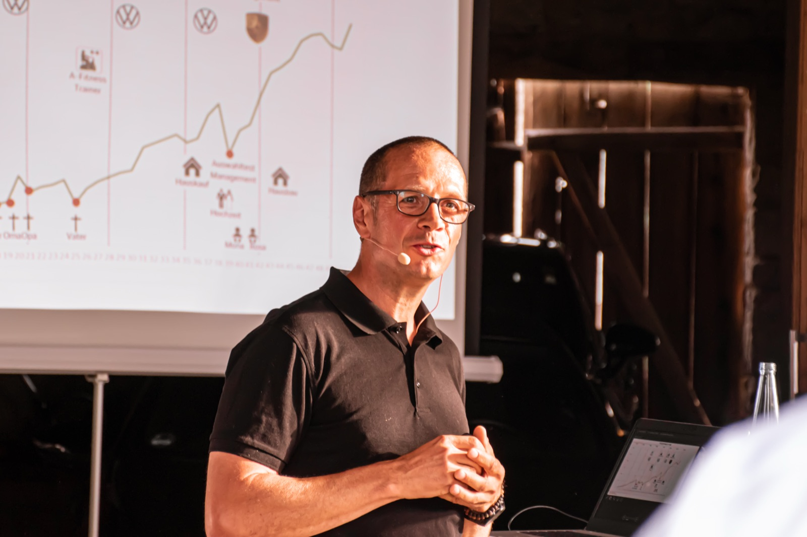
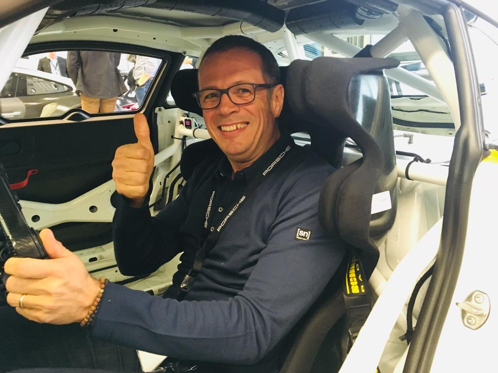

Für Geschäftsführung, Bereichsleitung und Führungskräfte, wenn ein Wandel ansteht oder ins Stocken gerät. Mit 25 Jahren Erfahrung aus Volkswagen und Porsche, und mit dem Blick auf die Menschen, die ihn tragen.
Klar.Echt.Wirksam.Führung, die trägt.Wandel, der bleibt.Klar.Echt.Wirksam.Führung, die trägt.Wandel, der bleibt.
Der Gipfel ist nicht das Ziel. Entscheidend ist, wer du auf dem Weg dorthin wirst.
Andreas Tietz
Meine Geschichte
25 Jahre Industrie. Dann ein Neustart.

Wolfsburg · Volkswagen
Führung habe ich dort gelernt, wo sie zählt: im Tagesgeschäft.
Als Diplom-Ingenieur bin ich bei Volkswagen eingestiegen und habe technische Informationssysteme, die Produktpflege und das Produktmanagement für Modellpflegen geleitet. Viele Jahre nah am Vorstand, mitten in Entscheidungen, die tausende Menschen betreffen.
Leipzig · Porsche
25 Serienanläufe. Jeder einzelne ein Wandel unter Zeitdruck.
Als Leiter Anlaufmanagement im Porsche Werk Leipzig war ich verantwortlich, wenn ein neues Fahrzeug in Serie ging. Der Termin steht, und Technik, Abteilungen und Menschen müssen gleichzeitig mitziehen. Dort habe ich gelernt: Veränderung scheitert selten an der Technik.
Einer der Anläufe, die mich am meisten geprägt haben: der Taycan, der erste vollelektrische Porsche. Ein Wandel nicht nur für ein Werk, sondern für eine ganze Marke.

Aus dem Fotoalbum: die Porsche-Zeit
Ende 2021
Dann habe ich das Buch zugeklappt.
Nach 25 Jahren im Konzern habe ich Porsche verlassen, das Haus in Sachsen verkauft und bin ins Allgäu gezogen. Viele haben gefragt: Was machst du jetzt? Meine Antwort war ein Neustart. Auf Englisch: Reboot.
Heute · Allgäu
Ich begleite Menschen und Unternehmen durch genau solche Übergänge.
Mit der Erfahrung aus der Industrie, fundierter Persönlichkeitsentwicklung und New Work. Und mit dem Wissen, wie es sich anfühlt, selbst mittendrin zu stehen.
Erfahrung
Was man in keinem Seminar lernt.
25Jahre im Volkswagen- und Porsche-Konzern
25Serienanläufe bei Porsche Leipzig verantwortet
17.Jahre Führungsverantwortung
12.Jahre Arbeit nah am Vorstand
Zusammenarbeit
Drei Wege, mit mir zu arbeiten.
Am Anfang steht immer ein Gespräch über deine Situation. Danach schlage ich vor, was wirklich passt. Kein Standardpaket.